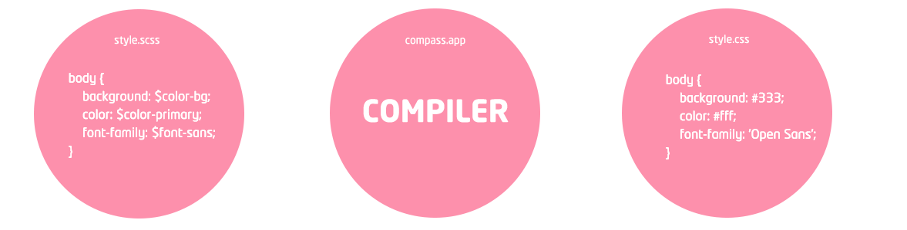

Sass Basics by Greg Rickaby
.sass was modeled after another language named, "Haml" and uses indentation to seperate CSS blocks..scss closley models traditional CSS blocks and indentation, making the transition from CSS to Sass easier.For the remainder of this presentation, I will concentrate on the .scss markup
To install Sass I needed to install Gems, and to install Gems I needed to install Ruby, and to install Ruby I need to Grunt and sudo the oskeychain helper...
No!! You can download one of many apps (which I will highlight in a minute), point, click, and be compiling in minutes. No command line needed.
I don't have Admin access to my web server. So, why even bother learning Sass?
Sass lives and breathes on your local machine. It doesn't do anything (nor does it even belong on a web server). Browsers can't read or even interperate Sass. This is why Sass is a PRE-processor. It's processed before being uploaded to your web server.
Do any of these sayings, sound familiar?
I write CSS everyday. I know CSS pretty well. My workflow is fine. I'm productive. Why does anything need to change?
I can tell you that after making the jump, I am actually more productive. And I write better CSS. And the projects I work on are in better, more maintainable shape because of it. And in some cases, faster. Chris Coyer, css-tricks.com
I was a reluctant believer in Sass. I write stylesheets by hand! I don’t need help! And I certainly don’t want to add extra complexity to my workflow. Go away!
This was partly due to a lot of misconceptions I had prior to using it. Do I need to know Ruby or advanced command-line shenanigans? Will I need to completely change the way I’ve been writing stylesheets? Will the CSS it outputs be bloated and unreadable? Thankfully, the answer is “nope” for each of those questions. Dan Cederholm, Owner SimpleBits.com, Author Sass for Web Designers
Sass and it's stylesheets reside inside your theme's directory.
style.scss into style.css.The compiler can "watch" for changes to your Sass directory.
style.css ...automatically!style.css to the web server.This is a basic configuration file (config.rb) which provides instructions to the compiler. Without it, the compiler wouldn't know where to look - or where to output the CSS.
sass_dir = "/" <-- Sass stylesheet directory http_path = "../" <-- Path to your website css_dir = "../" <-- CSS directory (the output of compiler) output_style = expanded <-- Output style (can be "compact" or "expanded") line_comments = false <-- Helpful during development
config.rb.If your first thought when I say "compiler" is the command line, then I have good news. There are PLENTY of GUI compilers out there.
Grunt - not a GUI, but super easy to learn! (http://gruntjs.com/)
"Partials" are simply partial stylesheets which contain little snippets of CSS. This is a great way to modularize your CSS and help keep things easier to maintain.
_typography.scss._header.scss, _content.scss, _sidebar.scss, _footer.scss, etc...Partial stylesheets are included into the primary Sass stylesheet via the @import directive. Here is an example style.scss
/* Theme Name: _s Theme URI: http://underscores.me/ Author: Automattic Author URI: http://automattic.com/ */ @import "variables";
Think of variables as a way to store information that you want to reuse throughout your stylesheets. You can store things like colors, font stacks, or any CSS value you'd want to re-use throughout your theme. Just like PHP, Sass uses the $ symbol.
Above is some very basic CSS. Instead of writing #f5f5f5; over and over and over...
Let's use a variable! First, create _variables.scss
Now create a new file named, _defaults.scss and plug in your new variables:
After being compiled, the end result would be:
When you write HTML, you probably use a fairly clear nested, visual hierarchy with indentation. With CSS? Nesting can get confusing in a hurry. Sass lets you nest your CSS selectors, in the same visual hierarchy of HTML.
When compiled, it looks like:
Use an ampersand & as a "shorthand" way to include a parent.
@import feature allows you to import several stylesheets into one. The caveat however, is each @import creates a new HTTP request.@import function and combines everything into a single CSS file.Some things in CSS are a bit tedious to write, especially vendor prefixes. A mixin lets you make groups of CSS declarations, or "functions" that you could reuse throughout your theme. You can even pass in arguments! Here's an example for border-radius.
When compiled, style.css shows:
Using @extend lets you share a set of CSS properties from one selector to another. Think of @extend like variables, only they're chunks of code.
Doing math in your CSS is very helpful. Sass has a handful of standard math operators like +, -, *, /, and %. Here is a simple fluid grid, based on 960px:
Because Sass is all about writing less code, and just like theme frameworks for WordPress (_s, Genesis, Hybrid, etc...) are about giving you a head start; there are a few Sass frameworks (namely Compass and Bourbon) that provide a ton of mixins and snippets.
Some clarifications about Compass and Compass.app. Compass.app is simply the name of a compiler - that comes pre-bundled with the Compass Framework.
Installing frameworks can be done via the command line. (Unless it comes pre-bundled, then it's already there!)
Compass gem install compass
Bourbon gem install bourbon
Neat (requires Bourbon) gem install neat
Bitters (requires Bourbon) gem install bitters
Including a framework is as easy as using @import. Now we have all kinds of mixins available for our project!
I'm going to change the color of this text.
Sass is an essential tool for any front-end development project (big or small). I hope I've shown you that Sass is NOT scary, nor are you required to think like a developer to use it! Slides can be found anytime at gregrickaby.com/slides/sass-basics/